Introduction
The Portslade Standard has started. Welcome to the page, news will be added everytime it arrives. We rely on the community to send in their
news, columns and letters, to keep this paper going. As we are just starting up, there will not be much content on the website. New news will be added
to the social media pages, if you are interested in that story, there will be a link to find out more. This website will be the heart of all news. It is
where the links will take you. Check out this weeks lifestyle page for a short column on different subjects.
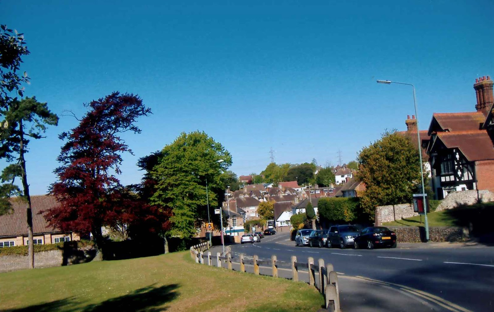
Please vote for Easthill park for the best Green flag park!
Link here
Brighton and Hove council: We put the ruin in ruins
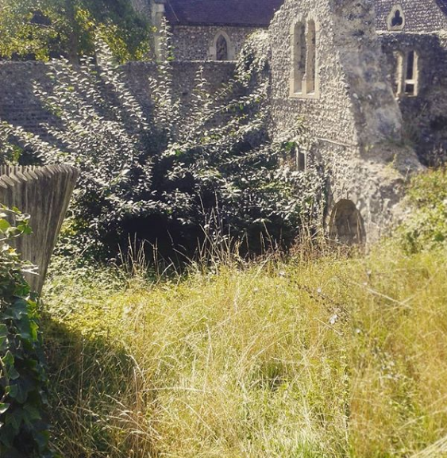
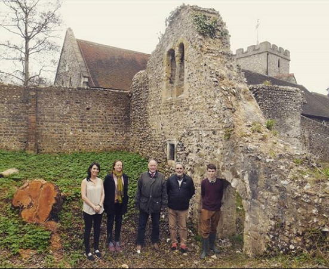
The above pictures were taken 4 months apart. The first picture is the most up to date. As you can see a tree, lots of weeds and damaging ivy has grown since before.
Local groups have been showing an interest in the taking over and upkeep of the manor house. You would think a project saving the council work and money, and caring for the historic monument would be in everyone's best interest. The council officers involved have been slow to reply and uninterested in the project proposed by local portslade residents.
If council officers had to be elected, would some of them still ignore the people they are responsible to? As you may know ivy is damaging to brickwork, roots are damaging to foundations and plants block view. It would be a shame if Portslade lost the oldest non-church monument in the entire city, to destructive and avoidable plants.
Local councillors for South Portslade have shown support for the project and are helping to get the Council officers to respond. Hopefully we will be seeing it maintained and open to public viewing all week round.
Hannah Brakenbury
Notable residents column
This week's notable resident is Hannah Brakenbury. A wealthier member of Portslade who donated lots of money to the schools and church. She also donated 15,000 pound to Oxford, Balloil college.
Portslade infant school has recently renamed itself "Brakenbury primary school", after Hannah Brakenbury's genourous donations of a building for the school. This building is currently known as the Annex.
Donations over the years to the church resulted in the building of the Brackenbury chapel. This is where Hannah Brackenbury is currently buried. Sadly, it is being used as storage for the church, with a ladder and several boxes. Rather disgraceful.
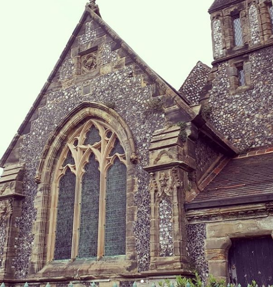
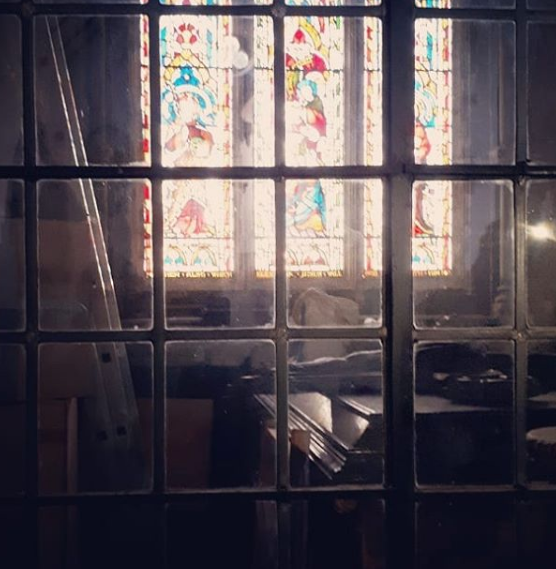
The Easthill walled garden
The walled garden in Easthill Park (entrance located next to the car park) has always been a secret compartment to the park. The garden is currently home to many trees, shrubs and flowers.
Easthill Park's house was built by Edward Blaker, although parts of it are believed to be built onto an existing building dating back to the 17th century.
The walled garden was formally called the kitchen garden, and grew a number of herbs and vegetables. The wall was built using a horizontal line of pebbles. The wall is under a constant state of repairs, due to people climbing over and damaging it.
The garden has started to fall into disrepair, where the ground is dry and weeds growing everywhere. A local gardening project started at the beginning of summer, who are always looking for more volunteers.
We have seen several ferns planted, and soil taken care of. Herbs were planted, but some members of the community decided to steal the signs and walk over the plants. Come next season the project workers hope to start the herbs off inside, and plant them out when they are ready.
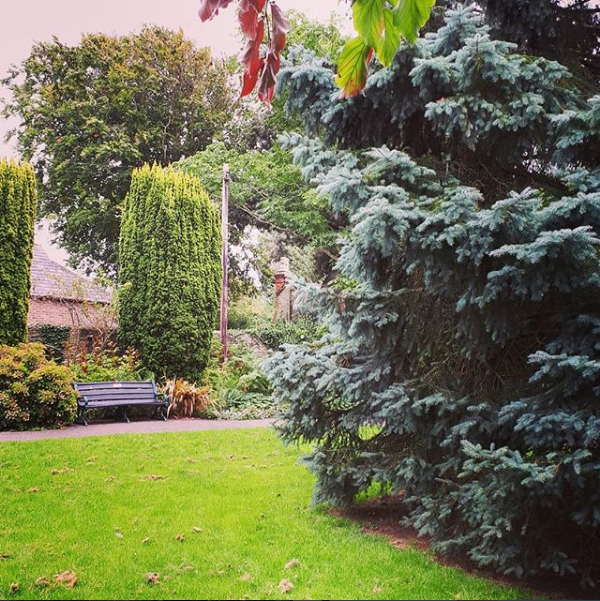
The stables of Portslade
History column
Portslade has been, and still is home to many stables. Horses were once the main method of travel around England, therefore Portslade had many.
.
The original stables would have belonged to Kemps, which was built in 1540. The building materials used within many of Portslade's standing stables make us estimate they date back to the Georgian era. Stables were greatly improved by the Victorians, with official guidelines to keep them clean.
In 1980 the site of the stables were sold and houses built. A sign remains there today, as seen in the first image below. The second image is someone actually using the stables in the 1960's.
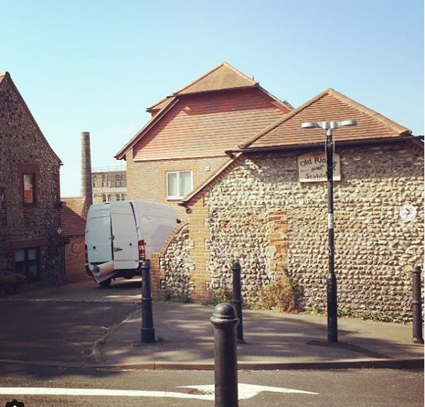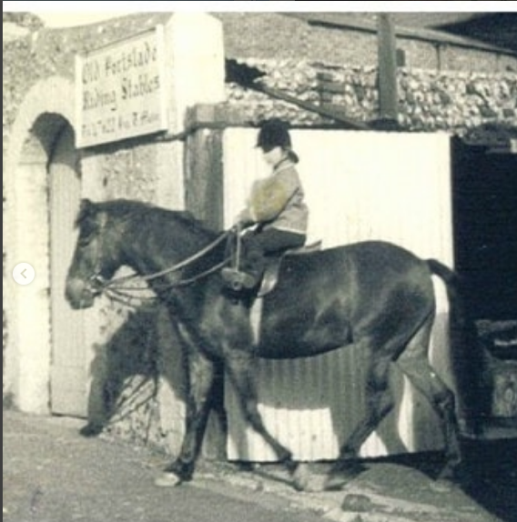
Mileoak farm currently has their own stables, as does the old manor lodge near the village centre.
There remains a disused area of Easthill Park, originally being the stables of Edward Blaker (the first owner of Easthill house). The stable area still remains, however it is overgrown, damp and used for storage. There is belief the council is going to build housing along that area, but nothing has been made official.
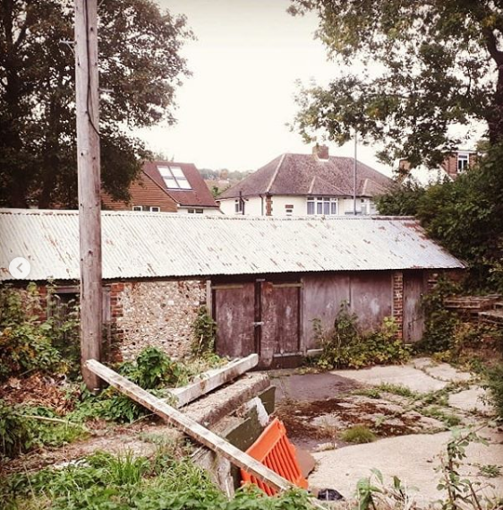
The building where Emmaus is, as mentioned before is an old manor house. Naturally the Lord of the manor had a stables, which currently is an outbuildings the the charity. The old doors have been painted green, as seen below.
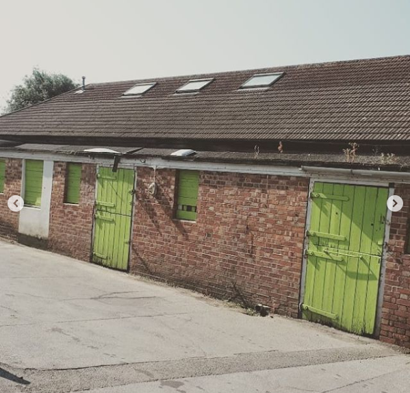
The old coach house was never really viewable to the community, until now. It has been turned into loverly little apartments, keeping with the traditional architecture of Portslade.
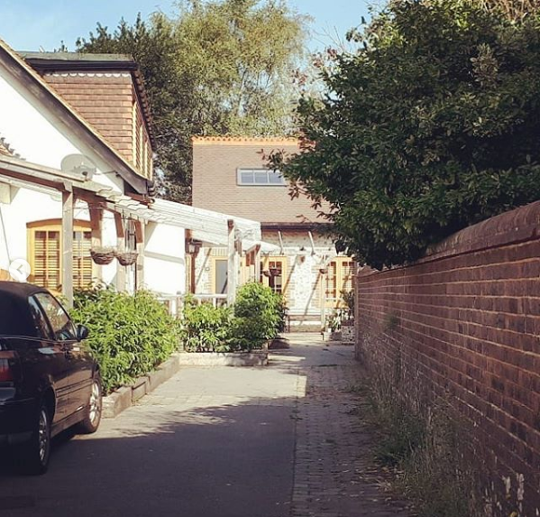
Easthill park keeping the Green flag flying
Local events
Easthill park has been a green flag park for quite a while, thanks to the hard work of residents, and our council's park team. The city can vote for the best green flag park, with Green flag's new competition.
Easthill park was originally the home of Edward Blaker, and his family. Portslade council purchased the house and it's grounds in 1947, it then became a public park.
Please help us defend our Portslade honour, and vote for Easthill park using the link:
Link
You can find the link on our Instagram page
Help support one of your local parks, and the community projects run within it.
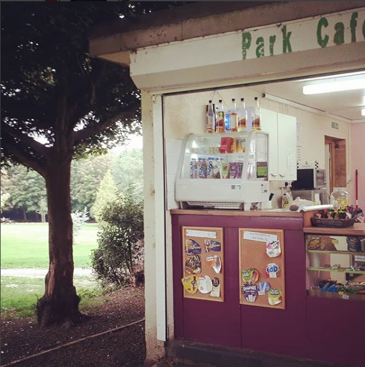
Portslade's rural charm
It may not seem it today, but Portslade was once a farming and shipping community. A small village consisting of a handful of houses, farm land, and a brewery.
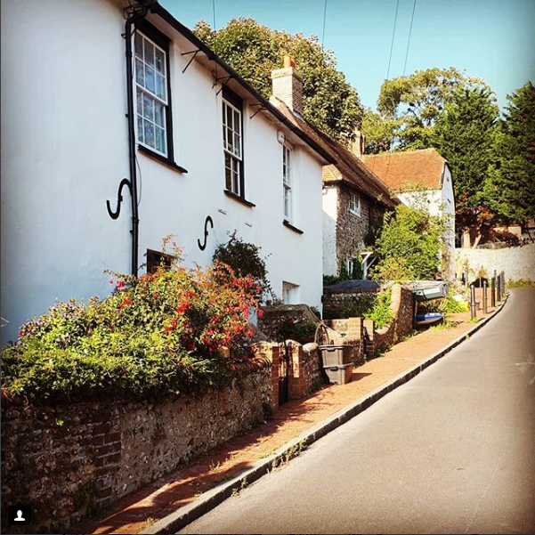
These buildings all remain here today. The brewery is currently undergoing renovations to become flats, while keeping the traditional outside look.
Farming and brewing was the main source of income for Portslade, and being so close to the sea, easy to ship across all of the former British Empire. Now many people commute to Brighton and Hove (or further) for their jobs.
Portslade continues with its by sea export and farming. Mileoak farm continues as a working farm, with a nice cafe, farm shop and many animals to see.
Portslade's village sealegs
Notable residents column
Every sunday we will be posting a column on notable Portslade residents, both past and present.
Today's notable resident is Samual Isger, Royal navy. As it is Merchant Navy day tomorrow, it's more than fitting to do a maritime figure.
Isger was a Naval veteran, having joined the Royal Navy in 1852. Records state that he was of small stature, being only 5-ft and 1in. tall, with a fair complexion and grey eyes.
He served on board many ships and every commander he served under described his conduct as being "very good". It may not sound it, but in military terms that is very high.
The ships he served on were:
•HMS London (1853-1856)
•HMS Batterer(1856)
•HMS Raleigh(1856)
•HMS Alligator(1857)
•HMS Nanking 1857-1859)
•HMS Victory (1859)
•HMS Hannibal (1859)
Being after the battle of Trafalgar (1805), to serve on board HMS Victory was considered a great honour.
Source of infomation:
http://portsladehistory.blogspot.com/2018/01/carlton-terrace-portslade.html?m=1
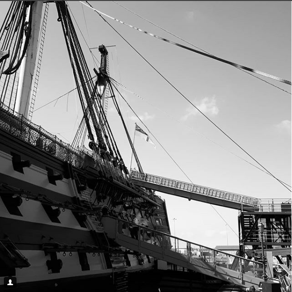
Portslade Manor house history
History column
The old Portslade Manor ruins is one of the oldest monuments in Portslade. A historically protected building, with national importance
After the Lord of the manor moved to a new manor house, currently the Emmaus building,
the building was used as a poor house. Local theory is that the Lord of the manor did not
like the impoverished living so close to his home, thus had it destroyed. The bricks were used to make a folly,
currently next to the Emmaus building. Back in the Victorian Era, it became popular to have a folly on your land
The ruins are currently overgrown, and under the jurisdiction of Brighton and Hove council. A local group of volunteers
has been looking into the restoration of the Manor house, and have it viewable by the public. It will be an add on the
the Portslade History Trail made by the charity Fresh Start Portslade.
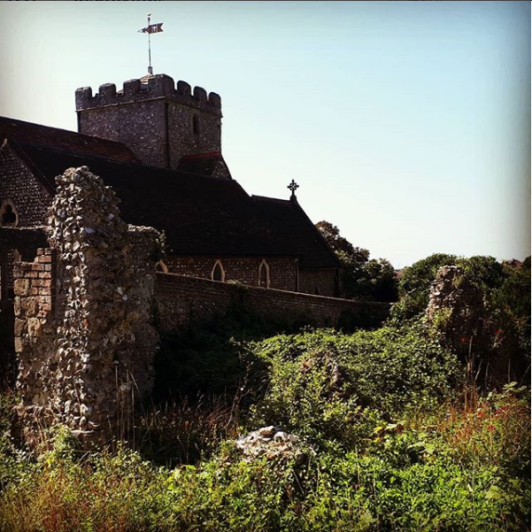
Try something new
Have you ever thought about runner bean soup? Runner beans are easy, and cheap to grow. From a few seeds your fridge can become full up!
Runner bean soup is refreshing, and healthy. All ou need are a few ingredients to make this delicious dish.
Fashion
Yellow is taking to the streets. Portslade was formally a rural community, it's time to show off the yellow country look.
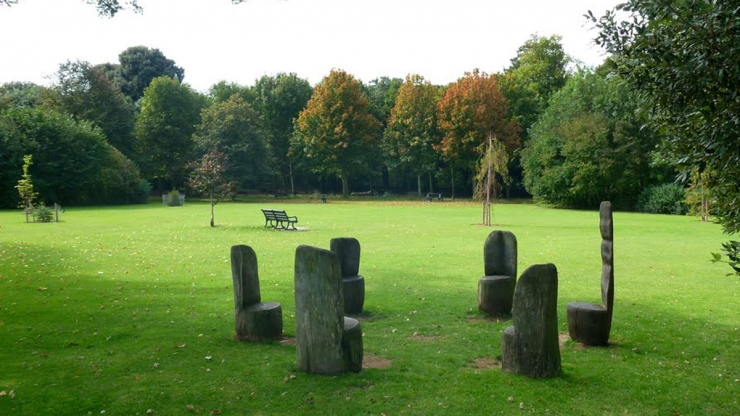
Food
There is nothing as fine as the Easthill park cafe. Have a coffee in the green flag park, or perhaps get a takeaway cup and sit in Portslades historic
walled garden. There is much to see in Portslade.
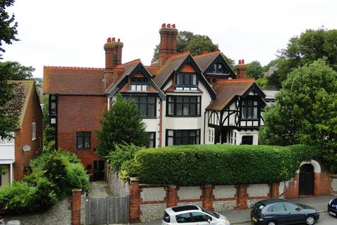
Home
The village is home to many historical buildings, but one could be your own. Live the life of the former Lords of Portslade in this opulent home.